How to Create Table Views in Swift
Goal
We are going to create an app that has a table view with a list of pet names! You will learn
how to create table views and populate them with data. You'll also learn the basics of arrays in Swift.
Create the Project
- Open Xcode
- Create a new Xcode project
- Under iOS, click Application
- Choose Single View Application
- A single view application creates a starting point (or template) for an app that has a single view. You can add more views to the single view if you want to.
- NEXT
- Fill out the data for the project
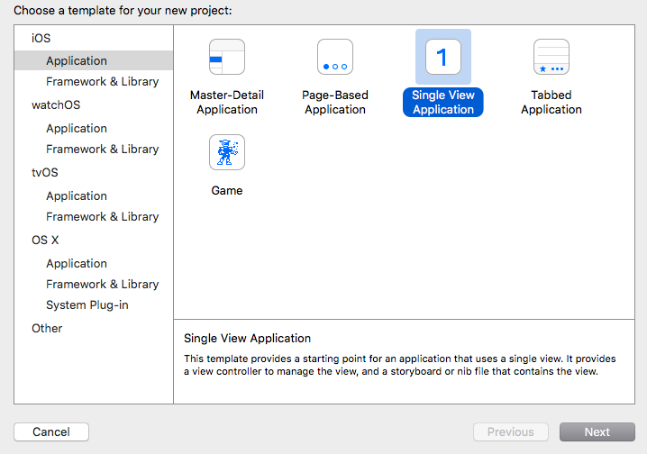
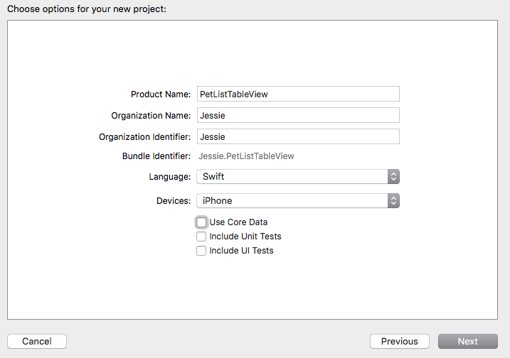
- Product Name is the name of your project
- Organization Name is used if you put your app in the app store, so I just put my name or initials
- Organization Identifier is also used for the app store, so I just put my name here as well
- Bundle Identifier is something Xcode create automatically
- Language should be Swift
- Devices should be iPhone. We will be dealing with the Universal selection later
- Make sure all checkboxes are unchecked
- NEXT
- Choose a place where you want your project located. I usually put it on my Desktop
- Keep Source Control: Create Git repository unchecked, we don’t need version control through xcode
- Version control is used to help keep your code organized and in different versions so you can revert back to a time before
Create the table view controller in the Storyboard
- Find the Project Navigator and go into Main.storyboard. This is the main layout file
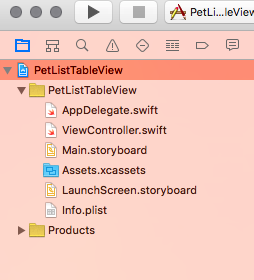
- If you want more room to work, you can hide sections of Xcode by clicking on these square icons
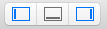
- The initial scene is a view controller but we want a table view controller
- Click on the view controller in the storyboard and delete it
- Go over to the Object Library and drag onto the storyboard a table view controller
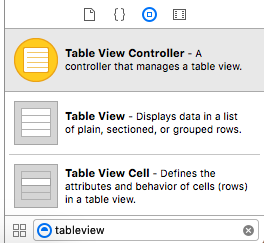
- In the attributes inspector make sure “Is Initial View Controller” is checked
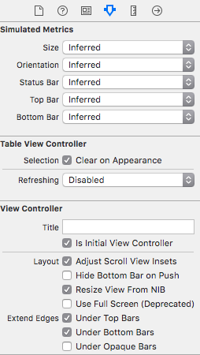
- We need to make sure the ViewController.swift file is associated with our new view controller, so go into ViewController.swift and change its super class from UIViewController to UITableViewController
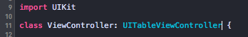
- Go back into Main.Storyboard, select the table view controller and change its class to ViewController
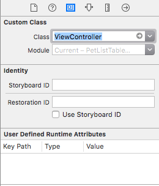
- Select the Table View Cell and in the attributes inspector make the identifier CellIdentifier
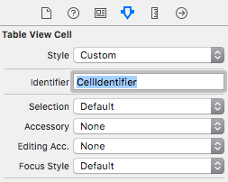
- If you run the app, you will see an empty table view!
Populate the Table View Cells With Data
- Go into ViewController.swift and add an array that will hold the pet names
- Then add strings (pet names) to the array
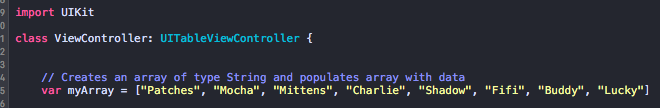
- We need to add required functions for the table view to work properly
- Copy the following two functions into ViewController.swift
- The first function tells the view controller how many rows are going to be in the table view. myArray.count counts the number of items in the array we created
- The second function displays the cells, so you do any formatting here
- You will see the CellIdentifier is being used to access our cell in the view controller
- cell.textLabel?.text creates text for each of the cells
- myArray[indexPath.row] gives each cell one pet name
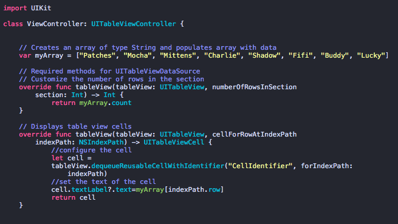
- If you run the app, you will be able to see the pet names!